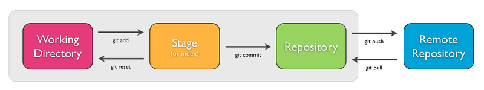

migueldavidq@gmail.com
In 2002, the Linux kernel project began using BitKeeper, a proprietary software.
In 2005 it was no longer offered free of charge.
"unpleasant person" - "persona desagradable"
Git as "the stupid content tracker"
Git is a distributed source code control system or SCM.
$ git config --global user.name "USERNAME"
$ git config --global user.email "EMAIL@EMAIL.com"
$ git init
$ git add .
$ git commit -m "init"
git init DIRECTORY
$ git add README.md
$ git commit -m "DESCRIPTIVE MESSAGE"
$ git status
$ git add .
$ git status -u
$ git add README.md
$ git add *.txt
$ git add docs/*.txt
$ git add docs/
$ git add --all
$ git add .
$ git status
$ git status -h
$ git commit -m "DESCRIPTIVE MESSAGE"
$ git commit -h
$ git log
$ git log --summary
$ git log --oneline
$ git log --follow --oneline FILE
$ git log --pretty=format:'%h - %cn - %s' --abbrev-commit
$ git diff
$ git diff --staged
$ git checkout master
$ git checkout COMMIT
$ git checkout COMMIT FILE
$ git checkout HEAD hello.py
$ git revert COMMIT
$ git checkout COMMIT
$ git checkout COMMIT FILE
$ git reset FILE
$ git config
$ git init
$ git add
$ git commit
$ git status
$ git log
$ git diff
$ git revert
$ git checkout
$ git reset
$ git branch
$ git branch BRANCH-NAME
$ git branch -d BRANCH-NAME
$ git branch -D BRANCH-NAME
$ git branch -m NEW-NAME
$ git branch BRANCH-NAME
$ git checkout BRANCH-NAME
$ git checkout -b BRANCH-NAME
$ git merge BRANCH-NAME
$ git merge --no-ff BRANCH-NAME

$ git remote
$ git remote -v
$ git remote add NAME URL
$ git remote rm NAME
$ git remote rename OLD-NAME NEW-NAME
https://github.com/Mayccoll/Linux.git
ssh://user@host/path/to/repo.git
git@github.com:Mayccoll/Linux.git
$ git clone https://github.com/Mayccoll/Linux.git
$ git clone ssh://user@host/path/to/repo.git
$ git clone git@github.com:Mayccoll/Linux.git
git clone git@github.com:mayccoll/Linux
___ _____ ___ __________ ________ _____
1 2 3 4 5 6
1. Command
2. Argument
3. host user
4. host
5. User
6. Folder
$ git push BRANCH
$ git push origin master
$ git fetch REMOTE
$ git fetch REMOTE/BRANCH
$ git fetch origin
$ git pull REMOTE
=
$ git fetch REMOTE
$ git merge REMOTE/BRANCH
$ git branch -a
$ git branch -r
$ git branch
$ git checkout -b
$ git merge
$ git remote
$ git clone
$ git push
$ git fetch
$ git pull
Repo Github